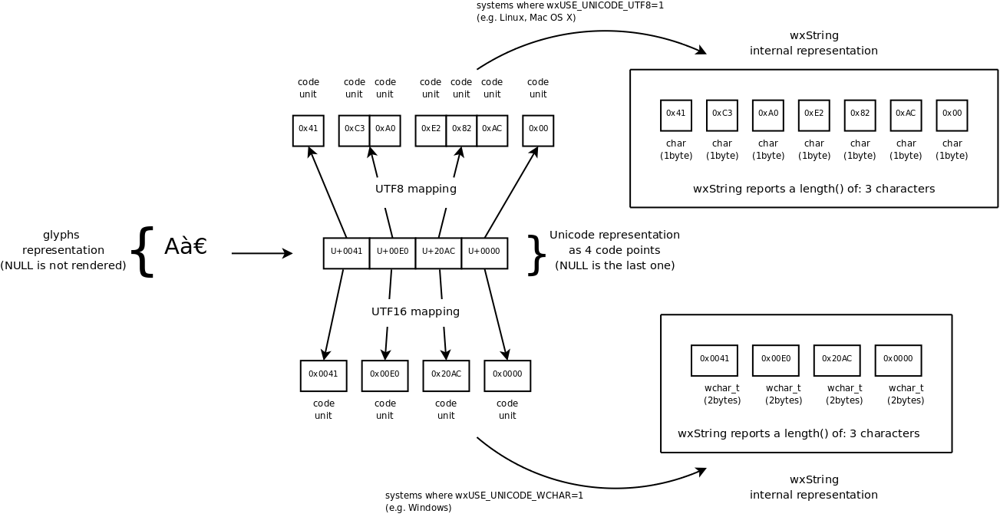

|
|
Version: 3.3.1 |
Table of Contents
wxString is used for all strings in wxWidgets.
This class is very similar to the standard string class, and is implemented using it, but provides additional compatibility functions to allow applications originally written for the much older versions of wxWidgets to continue to work with the latest ones.
When writing new code, you're encouraged to use wxString as if it were std::wstring and use only functions compatible with the standard class.
wxString Related Compilation Settings
The main build options affecting wxString are wxUSE_UNICODE_WCHAR and wxUSE_UNICODE_UTF8, exactly one of which must be set to determine whether fixed-width wchar_t or variable-width char-based strings are used internally. Please see Choosing Unicode Representation for more information about this choice.
The other options all affect the presence, or absence, of various implicit conversions provided by this class. By default, wxString can be implicitly created from char*, wchar_t*, std::string and std::wstring and can be implicitly converted to char* or wchar_t*. This behaviour is convenient and compatible with the previous wxWidgets versions, but is dangerous and may result in unwanted conversions, please see Converting to and from wxString for how to disable them.
Iterating over wxString
It is possible to iterate over strings using indices, but the recommended way to do it is to use iterators, either explicitly:
or, even simpler, implicitly, using range for loop:
- Note
- wxString iterators have unusual proxy-like semantics and can be used to modify the string even when not using references, i.e. with just
auto, as in the example above.
wxString Internal Representation
- Note
- This section can be skipped at first reading and is provided solely for informational purposes.
As mentioned above, wxString may use any of UTF-16 (under Windows, using the native 16 bit wchar_t), UTF-32 (under Unix, using the native 32 bit wchar_t) or UTF-8 (under both Windows and Unix) to store its content. By default, wchar_t is used under all platforms, but wxWidgets can be compiled with wxUSE_UNICODE_UTF8=1 to use UTF-8 instead.
For simplicity of implementation, wxString uses per code unit indexing instead of per code point indexing when using UTF-16, i.e. in the default wxUSE_UNICODE_WCHAR==1 build under Windows and doesn't know anything about surrogate pairs. In other words it always considers code points to be composed by 1 code unit, while this is really true only for characters in the BMP (Basic Multilingual Plane), as explained in more details in the Unicode Representations and Terminology section. Thus when iterating over a UTF-16 string stored in a wxString under Windows, the user code has to take care of surrogate pairs manually if it needs to handle them (note however that Windows itself has built-in support for surrogate pairs in UTF-16, such as for drawing strings on screen, so nothing special needs to be done when just passing strings containing surrogates to wxWidgets functions).
- Remarks
- Note that while the behaviour of wxString when
wxUSE_UNICODE_WCHAR==1resembles UCS-2 encoding, it's not completely correct to refer to wxString as UCS-2 encoded since you can encode code points outside the BMP in a wxString as two code units (i.e. as a surrogate pair; as already mentioned however wxString will "see" them as two different code points)
In wxUSE_UNICODE_UTF8==1 case, wxString handles UTF-8 multi-bytes sequences just fine also for characters outside the BMP (it implements per code point indexing), so that you can use UTF-8 in a completely transparent way:
Example:
To better explain what stated above, consider the second string of the example above; it's composed by 3 characters and the final NUL:

As you can see, UTF16 encoding is straightforward (for characters in the BMP) and in this example the UTF16-encoded wxString takes 8 bytes. UTF8 encoding is more elaborated and in this example takes 7 bytes.
In general, for strings containing many latin characters UTF8 provides a big advantage with regards to the memory footprint respect UTF16, but requires some more processing for common operations like e.g. length calculation.
Finally, note that the type used by wxString to store Unicode code units (wchar_t or char) is always typedef-ined to be wxStringCharType.